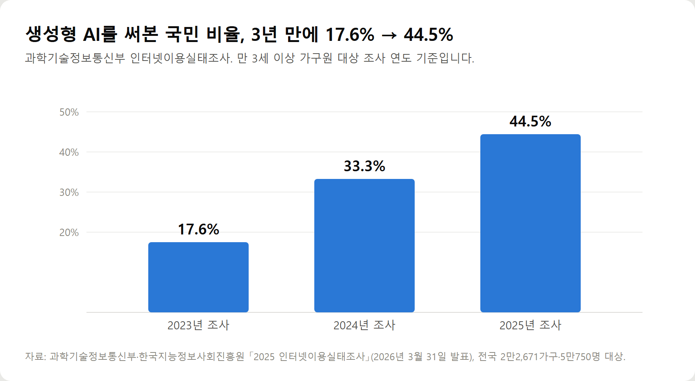
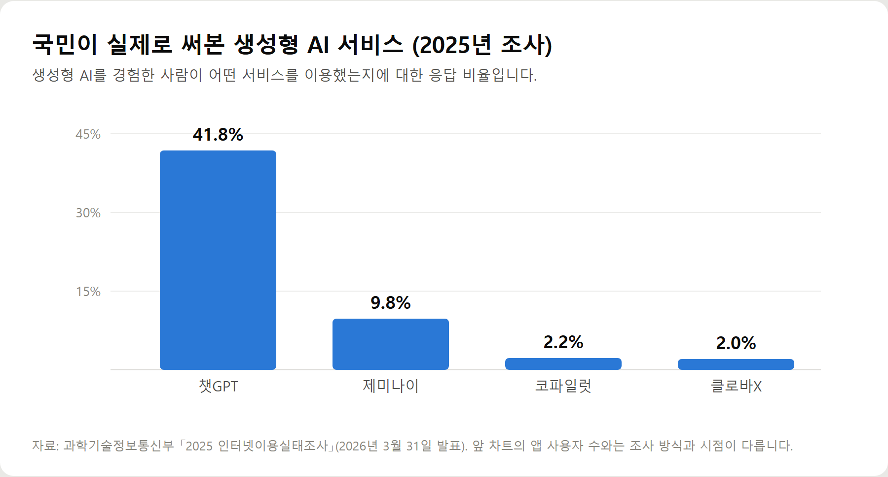
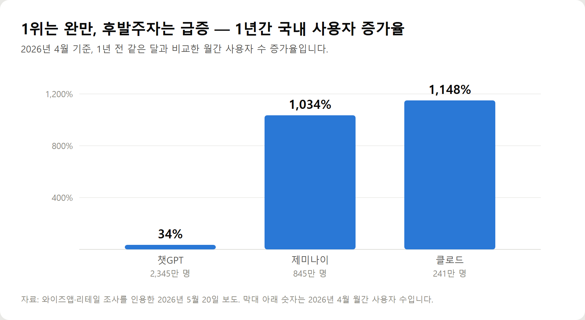
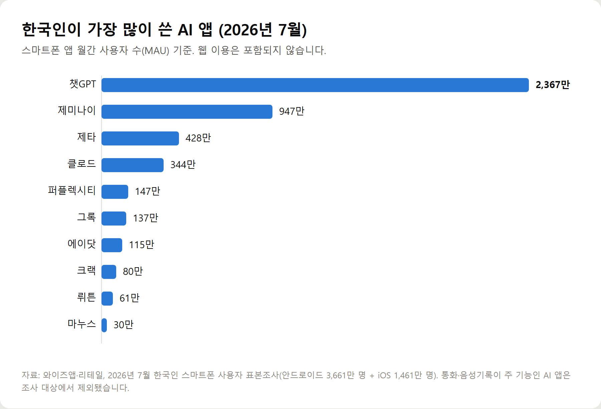

<meta charset="utf-8">
<title>2026 AI 앱 추천 10가지 — 나의 투자 그리고 행복한 여행</title>
<meta name="description" content="2026년 한국인이 실제로 많이 쓰는 AI 앱 10가지를 사용자 수·무료 범위·요금 기준으로 비교했습니다.">
<meta name="viewport" content="width=device-width, initial-scale=1">
<link rel="canonical" href="https://worldtraveler1.tistory.com/88">
<link rel="preconnect" href="https://fonts.googleapis.com">
<link rel="preconnect" href="https://fonts.gstatic.com" crossorigin>
<link rel="stylesheet" href="https://fonts.googleapis.com/css2?family=Hahmlet:wght@400;600;800&family=IBM+Plex+Mono:wght@400;500&family=IBM+Plex+Sans+KR:wght@300;400;500;600&display=swap">

<style>
  :root{
    --paper:#F2EEE6;--surface:#FAF8F3;--surface-2:#E7E1D5;
    --ink:#191510;--ink-2:#4A4235;--ink-3:#7D7364;
    --line:#D6CEBF;--line-soft:#E4DDD0;--accent:#B06A15;--accent-bright:#C2761A;
    --up:#E5484D;--down:#3B82F6;
    --f-display:"Hahmlet",'Nanum Myeongjo',"Apple SD Gothic Neo",serif;
    --f-body:"IBM Plex Sans KR","Apple SD Gothic Neo","Malgun Gothic",sans-serif;
    --f-mono:"IBM Plex Mono","SFMono-Regular",Consolas,monospace;
    --pad:clamp(20px,5vw,64px);
  }
  @media (prefers-color-scheme:dark){
    :root:not([data-theme="light"]){
      --paper:#0B1120;--surface:#121A2C;--surface-2:#1A2439;
      --ink:#E9EEF7;--ink-2:#A9B5C9;--ink-3:#72809A;
      --line:#26314A;--line-soft:#1D2739;--accent:#E8A33D;--accent-bright:#F0B45C;
    }
  }
  *{box-sizing:border-box;}
  body{margin:0;background:var(--paper);color:var(--ink);font-family:var(--f-body);
    font-weight:300;font-size:1rem;line-height:1.75;-webkit-font-smoothing:antialiased;}
  a{color:inherit;}
  img{max-width:100%;height:auto;}
  .wrap{max-width:760px;margin:0 auto;padding-inline:var(--pad);}
  .nav{position:sticky;top:0;z-index:20;background:color-mix(in srgb,var(--paper) 88%,transparent);
    backdrop-filter:saturate(180%) blur(12px);border-bottom:1px solid var(--line);}
  .nav-in{display:flex;align-items:center;justify-content:space-between;height:58px;}
  .brand{font-family:var(--f-display);font-weight:600;font-size:1rem;letter-spacing:-.02em;text-decoration:none;}
  .back{font-family:var(--f-mono);font-size:.72rem;color:var(--ink-3);text-decoration:none;}
  .article{padding-block:clamp(40px,7vw,72px) clamp(56px,9vw,96px);}
  .eyebrow{font-family:var(--f-mono);font-size:.68rem;letter-spacing:.16em;text-transform:uppercase;
    color:var(--accent);margin:0 0 14px;}
  h1{font-family:var(--f-display);font-weight:800;font-size:clamp(1.6rem,4.4vw,2.3rem);
    line-height:1.3;letter-spacing:-.03em;margin:0 0 16px;}
  .byline{font-family:var(--f-mono);font-size:.72rem;color:var(--ink-3);
    padding-bottom:24px;border-bottom:1px solid var(--line);margin-bottom:32px;}
  h2{font-family:var(--f-display);font-weight:600;font-size:1.25rem;letter-spacing:-.02em;margin:42px 0 14px;}
  h3{font-family:var(--f-display);font-weight:600;font-size:1.05rem;letter-spacing:-.02em;
    margin:30px 0 10px;padding-top:14px;border-top:1px solid var(--line-soft);}
  h3 .code{font-family:var(--f-mono);font-size:.7rem;font-weight:400;color:var(--ink-3);margin-left:6px;}
  p{margin:0 0 18px;color:var(--ink-2);}
  ul.checks{margin:0 0 18px;padding-left:20px;color:var(--ink-2);}
  ul.checks li{margin-bottom:8px;font-size:.94rem;}
  table{width:100%;border-collapse:collapse;font-size:.88rem;margin-bottom:8px;}
  th{font-family:var(--f-mono);font-size:.66rem;letter-spacing:.06em;text-transform:uppercase;
    color:var(--ink-3);text-align:right;padding:8px 6px;border-bottom:1px solid var(--line);}
  th:first-child{text-align:left;}
  td{padding:10px 6px;border-bottom:1px solid var(--line-soft);color:var(--ink-2);}
  td.num{font-family:var(--f-mono);text-align:right;font-variant-numeric:tabular-nums;}
  td.up{color:var(--up);} td.down{color:var(--down);}
  .scroll{overflow-x:auto;}
  figure{margin:22px 0;}
  figure img{display:block;border-radius:3px;background:var(--surface-2);}
  figcaption{margin-top:8px;font-family:var(--f-mono);font-size:.68rem;color:var(--ink-3);text-align:center;}
  .note{margin-top:34px;padding:16px 18px;border-left:3px solid var(--accent);
    background:var(--surface);border-radius:0 3px 3px 0;}
  .note p{margin:0;font-size:.85rem;color:var(--ink-3);}
  .foot{border-top:1px solid var(--line);background:var(--surface);padding-block:30px 38px;}
  .foot p{margin:0;font-size:.8rem;color:var(--ink-3);}
</style>

<nav class="nav">
  <div class="wrap nav-in">
    <a class="brand" href="../index.html">나의 투자 그리고 행복한 여행</a>
    <a class="back" href="../index.html#stocks">← 시황으로</a>
  </div>
</nav>

<main class="wrap article">
  <p class="eyebrow">Market</p>
  <h1>2026년 AI 앱 사용 데이터 정리 — 국내 MAU 순위와 요금·무료 범위 비교</h1>
  <p class="byline">생활 · 2026-09-18 기준</p>

  <p>한 줄 요약: 2026년 7월 국내 AI 앱 월간 사용자 수는 챗GPT 2,367만 명, 제미나이 947만 명, 제타 428만 명, 클로드 344만 명 순이며, 상위 앱 대부분이 무료 이용 구간을 두고 있습니다.</p>
  <p>글로벌 기준으로는 제미나이가 2026년 8월 월간 10억 명, 챗GPT가 2026년 2월 주간 9억 명을 각각 공식 발표했습니다. 두 숫자는 측정 단위가 달라 직접 비교되지 않습니다.</p>
  <p>이 글은 2026년 9월 기준으로 확인 가능한 사용자 통계와 각 사 요금 안내만 모아 정리한 기록입니다.</p>
  <h2>1. 2026년 AI 앱 시장, 1년 사이에 무엇이 달라졌나</h2>
  <p>가장 크게 달라진 것은 AI를 쓰는 사람의 수입니다.</p>
  <p>과학기술정보통신부가 2026년 3월 31일 발표한 「2025 인터넷이용실태조사」를 보면, 생성형 AI를 써본 적 있다는 국민이 44.5%였습니다. 2024년 조사에서는 33.3%, 2023년 조사에서는 17.6%였습니다.</p>
  <figure><figcaption>생성형 AI를 이용해 본 국민 비율 추이 2023~2025년 조사 (단위: %)</figcaption></figure>
  <p>3년 만에 두 배 반이 됐습니다. 여기서 '생성형 AI'는 질문을 하면 글·그림·영상 같은 결과물을 새로 만들어주는 AI를 말합니다. 챗GPT가 대표적입니다.</p>
  <p>두 번째 변화는 챗GPT 한 곳으로 몰려 있던 구도가 갈라진 것입니다.</p>
  <p>같은 조사에서 실제 이용한 서비스를 물었더니 챗GPT 41.8%, 제미나이 9.8%, 코파일럿 2.2%, 클로바X 2.0% 순으로 나왔습니다.</p>
  <figure><figcaption>생성형 AI 이용자가 실제 사용한 서비스 비율 (2025년 조사, 단위: %)</figcaption></figure>
  <p>다만 이 조사는 2025년에 이뤄진 것입니다. 2026년에 들어서면서 판도가 한 번 더 움직였습니다.</p>
  <p>와이즈앱·리테일 조사를 인용한 2026년 5월 보도에 따르면, 2026년 4월 기준 국내 사용자 수는 1년 전보다 챗GPT가 34% 늘어난 사이 제미나이는 1,034%, 클로드는 1,148% 늘었습니다.</p>
  <figure><figcaption>국내 AI 앱 사용자 수 1년간 증가율 (2026년 4월 기준, 단위: %)</figcaption></figure>
  <p>세 번째 변화는 AI가 챗봇 밖으로 나온 것입니다. 사진 보정, 영상 편집, 문서 요약, 번역, 자료 검색이 이제는 별도 앱이 아니라 기존에 쓰던 앱 안에 들어가 있습니다.</p>
  <h2>2. 한국인이 실제로 많이 쓰는 AI 앱 순위 (2026년 7월 기준)</h2>
  <p>국내에서 확인 가능한 가장 최근 수치는 와이즈앱·리테일의 2026년 7월 조사입니다.</p>
  <figure><figcaption>한국인 AI 앱 월간 사용자 수 TOP 10 (2026년 7월, 단위: 만 명)</figcaption></figure>
  <p>순서대로 정리하면 이렇습니다.</p>
  <ul class="checks">
    <li>1위 챗GPT 2,367만 명</li>
    <li>2위 제미나이 947만 명</li>
    <li>3위 제타 428만 명</li>
    <li>4위 클로드 344만 명</li>
    <li>5위 퍼플렉시티 147만 명</li>
    <li>6위 그록 137만 명</li>
    <li>7위 에이닷 115만 명</li>
    <li>8위 크랙 80만 명</li>
    <li>9위 뤼튼 61만 명</li>
    <li>10위 마누스 30만 명</li>
  </ul>
  <p>이 조사는 안드로이드 3,661만 명, iOS 1,461만 명을 표본으로 한 추정치이며, 통화 녹음·음성 기록이 주 기능인 AI 앱은 대상에서 빠졌습니다.</p>
  <p>3위 제타는 스캐터랩이 만든 AI 캐릭터 채팅 앱입니다. 사용자가 캐릭터의 성격과 세계관을 정해 대화를 이어가는 방식인데, 이용자의 약 87%가 10·20대로 알려져 있습니다.</p>
  <p>그래서 아래 상세 비교에서는 제타를 다루지 않았습니다. 사용자 수는 많지만 40대 이상이 일상이나 업무에 쓰기 위한 앱은 아니기 때문입니다.</p>
  <h2>3. 'AI 앱 순위'를 그대로 믿으면 안 되는 이유</h2>
  <p>이 부분을 먼저 짚고 가야 뒤의 내용이 제대로 읽힙니다.</p>
  <div class="note"><p>AI 앱 순위는 무엇을 셌느냐에 따라 완전히 달라집니다. 앱 사용자 수, 웹 방문자 수, 다운로드 수, 사용 시간은 각각 다른 지표이고, 같은 서비스도 지표에 따라 순위가 크게 바뀝니다.</p></div>
  <p>실제 사례를 보겠습니다.</p>
  <ul class="checks">
    <li>국내 앱 사용자 수 3위는 제타지만, 해외 순위표에는 거의 나오지 않습니다 — 한국 서비스이기 때문입니다</li>
    <li>쓰는 시간으로 재면 제타가 1위입니다. 2026년 2월 한 달 이용 시간이 1억 1,341만 시간으로 챗GPT의 5,047만 시간보다 두 배 이상 많았습니다</li>
    <li>커서(Cursor)는 사용자 수로는 순위에 들지 못하지만, 개발자 업계에서는 핵심 도구로 꼽힙니다</li>
    <li>코파일럿은 개인 사용자 수는 적어도 기업이 구입한 유료 좌석이 3,000만 개가 넘습니다 (마이크로소프트 2026년 7월 29일 발표)</li>
  </ul>
  <p>숫자를 발표하는 방식도 제각각입니다.</p>
  <p>오픈AI는 2026년 2월 챗GPT 주간 사용자 9억 명을 발표했고, 구글은 2026년 8월 11일 제미나이 앱 월간 사용자 10억 명을 발표했습니다. 하나는 주간, 하나는 월간이라 그대로 비교할 수 없습니다.</p>
  <p>그래서 아래 10가지는 '1위부터 10위'가 아니라, 국내 사용자 수·글로벌 발표치·실제 활용 범위·무료 가능성을 함께 본 대표 AI 앱 목록으로 보시는 편이 정확합니다.</p>
  <h2>4. 2026년 대표 AI 앱 10가지 상세 비교</h2>
  <p>앱마다 같은 형식으로 정리했습니다. 요금은 2026년 9월 기준이며, 각 사의 정책 변경으로 바뀔 수 있습니다.</p>
  <h2>① 챗GPT — 무엇을 물어야 할지 몰라도 되는 AI</h2>
  <ul class="checks">
    <li>개발사: 오픈AI(OpenAI)</li>
    <li>주요 기능: 대화, 글쓰기, 요약, 번역, 사진 인식, 이미지 생성, 음성 대화</li>
    <li>무료 사용: 가능 (가입 후 대부분 기능을 일정량까지)</li>
    <li>유료 플랜: 월 20달러 안팎의 기본 유료 플랜 외에 저가형·고가형 플랜 운영</li>
    <li>모바일: 안드로이드·아이폰 모두 지원</li>
    <li>PC/웹: 브라우저와 데스크톱 앱 모두 지원</li>
    <li>한국어: 자연스러운 수준. 음성 대화도 한국어로 가능</li>
    <li>초보자 난이도: 쉬움 — 말하듯 물어보면 됩니다</li>
  </ul>
  <p>이런 분께 맞습니다.</p>
  <ul class="checks">
    <li>AI를 처음 써보는 분</li>
    <li>문서·이메일·블로그 글의 초안이 필요한 분</li>
    <li>긴 글이나 약관을 쉬운 말로 풀어서 보고 싶은 분</li>
    <li>외국어 번역과 회화 연습이 필요한 분</li>
  </ul>
  <p>실제 활용법 세 가지입니다.</p>
  <ul class="checks">
    <li>약관이나 안내문을 사진으로 찍어 올리고 "이걸 쉬운 말로 설명해줘"라고 요청합니다</li>
    <li>"경조사 문자 문구를 3개 만들어줘"처럼 짧은 글의 초안을 받습니다</li>
    <li>여행 일정표를 만들 때 "3박 4일 오사카 일정, 하루에 3곳 이하로"처럼 조건을 주고 짜게 합니다</li>
  </ul>
  <p>장점은 사용자가 가장 많아 참고할 사용법이 풍부하고, 글쓰기·요약·번역을 하나로 해결할 수 있다는 점입니다. 음성으로 대화할 수 있어 타자가 불편한 분께도 접근성이 좋습니다.</p>
  <p>단점은 사실관계를 틀리게 답할 때가 있고, 무료 사용량이 제한된다는 점입니다. 최신 정보는 출처를 따로 확인해야 합니다.</p>
  <p>주의사항: 주민등록번호, 계좌번호, 진단서 원본 같은 민감한 정보는 입력하지 않는 편이 안전합니다.</p>
  <h2>② 제미나이 — 안드로이드 폰에 이미 들어 있는 AI</h2>
  <ul class="checks">
    <li>개발사: 구글(Google)</li>
    <li>주요 기능: 대화, 검색 연계, 문서·메일 연동, 이미지·영상 생성, 사진 편집</li>
    <li>무료 사용: 가능. 구글 계정만 있으면 됩니다</li>
    <li>유료 플랜: Google AI Pro 월 29,000원, AI Ultra 월 119,000원 (구글 공식 요금 안내 기준)</li>
    <li>모바일: 안드로이드 기본 탑재, 아이폰은 앱 설치</li>
    <li>PC/웹: 브라우저 지원, 지메일·구글 문서 안에서도 사용</li>
    <li>한국어: 자연스러운 수준</li>
    <li>초보자 난이도: 쉬움 — 안드로이드는 홈 버튼을 길게 눌러 바로 실행</li>
  </ul>
  <p>이런 분께 맞습니다.</p>
  <ul class="checks">
    <li>안드로이드 스마트폰을 쓰는 분</li>
    <li>지메일·구글 포토·구글 문서를 이미 쓰고 있는 분</li>
    <li>앱을 새로 깔기가 번거로운 분</li>
    <li>사진 정리와 간단한 보정을 함께 하고 싶은 분</li>
  </ul>
  <p>실제 활용법 세 가지입니다.</p>
  <ul class="checks">
    <li>홈 버튼을 길게 눌러 "내일 오전 10시 병원 일정 추가해줘"처럼 말로 일정을 넣습니다</li>
    <li>구글 포토에서 사진을 고른 뒤 필요 없는 배경을 지우거나 밝기를 맞춥니다</li>
    <li>지메일에서 긴 메일을 요약하고 답장 초안을 받습니다</li>
  </ul>
  <p>장점은 별도 가입 없이 쓸 수 있고, 구글 서비스와 그대로 연결된다는 점입니다. 무료 구간에서 쓸 수 있는 범위도 넓은 편입니다.</p>
  <p>단점은 기능이 구글 계정 안에 묶여 있어 다른 서비스와의 연결은 약하다는 점입니다. 답변 길이나 형식이 챗GPT와 다르게 느껴질 수 있습니다.</p>
  <p>주의사항: 계정 설정에서 대화 기록 저장 여부를 직접 확인해 두시는 편이 좋습니다.</p>
  <h2>③ 클로드 — 긴 글을 읽히고 정리시키기 좋은 AI</h2>
  <ul class="checks">
    <li>개발사: 앤스로픽(Anthropic)</li>
    <li>주요 기능: 긴 문서 읽기, 정리·요약, 글쓰기, 자료 분석, 코딩</li>
    <li>무료 사용: 가능 (하루 사용량 제한)</li>
    <li>유료 플랜: Pro 월 20달러(연 결제 시 월 17달러), 상위 플랜 월 100달러부터 (앤스로픽 공식 요금 안내 기준)</li>
    <li>모바일: 안드로이드·아이폰 지원</li>
    <li>PC/웹: 브라우저와 데스크톱 앱 지원</li>
    <li>한국어: 자연스러운 수준. 긴 문장을 정돈해 쓰는 편</li>
    <li>초보자 난이도: 보통 — 쓰기는 쉽지만 무료 사용량이 빨리 찹니다</li>
  </ul>
  <p>이런 분께 맞습니다.</p>
  <ul class="checks">
    <li>계약서·보고서·논문처럼 긴 문서를 다루는 분</li>
    <li>글의 문장을 다듬는 일이 많은 분</li>
    <li>자료를 읽고 표나 목록으로 정리해야 하는 분</li>
  </ul>
  <p>실제 활용법 세 가지입니다.</p>
  <ul class="checks">
    <li>보험 약관 PDF를 올리고 "보장 항목과 제외 항목만 표로 정리해줘"라고 요청합니다</li>
    <li>내가 쓴 글을 넣고 "어색한 문장만 고쳐줘, 내용은 바꾸지 말고"라고 조건을 답니다</li>
    <li>여러 견적서를 올려 항목별 차이를 비교하게 합니다</li>
  </ul>
  <p>장점은 긴 문서를 다룰 때 내용을 놓치지 않는 편이고, 문장이 차분하게 정리돼 나온다는 점입니다. 국내에서도 1년 사이 사용자가 열 배 이상 늘었습니다.</p>
  <p>단점은 무료 사용량이 상대적으로 빨리 소진되고, 이미지 생성 기능이 없다는 점입니다.</p>
  <p>주의사항: 업무 문서를 올릴 때는 회사 보안 규정을 먼저 확인하셔야 합니다.</p>
  <h2>④ 퍼플렉시티 — 출처를 달아주는 AI 검색</h2>
  <ul class="checks">
    <li>개발사: 퍼플렉시티(Perplexity AI)</li>
    <li>주요 기능: 웹 검색 기반 답변, 출처 링크 표시, 자료 조사</li>
    <li>무료 사용: 가능</li>
    <li>유료 플랜: Pro 월 20달러 수준</li>
    <li>모바일: 안드로이드·아이폰 지원</li>
    <li>PC/웹: 브라우저 지원</li>
    <li>한국어: 질문·답변 모두 한국어 가능. 다만 참고하는 자료는 영어가 섞입니다</li>
    <li>초보자 난이도: 쉬움</li>
  </ul>
  <p>이런 분께 맞습니다.</p>
  <ul class="checks">
    <li>AI 답변의 근거를 직접 확인하고 싶은 분</li>
    <li>최신 뉴스나 제도 변경 내용을 찾아야 하는 분</li>
    <li>블로그·보고서에 출처를 달아야 하는 분</li>
  </ul>
  <p>실제 활용법 세 가지입니다.</p>
  <ul class="checks">
    <li>"2026년 기초연금 수급 기준"처럼 바뀌는 정보를 묻고 링크를 눌러 원문을 확인합니다</li>
    <li>제품을 살 때 여러 후기 글의 공통된 지적을 모아 봅니다</li>
    <li>낯선 용어가 나왔을 때 뜻과 출처를 함께 확인합니다</li>
  </ul>
  <p>장점은 답변 옆에 출처가 붙어 사실 확인이 빠르다는 점입니다. 검색엔진 대신 쓰기에 가장 가까운 형태입니다.</p>
  <p>단점은 출처가 있다고 해서 내용이 항상 맞는 것은 아니라는 점입니다. 인용한 글 자체가 틀렸을 수 있습니다.</p>
  <p>주의사항: 중요한 결정은 반드시 원문 링크를 눌러 확인하십시오. 특히 금액과 날짜가 그렇습니다.</p>
  <h2>⑤ 마이크로소프트 코파일럿 — 오피스 문서를 다루는 AI</h2>
  <ul class="checks">
    <li>개발사: 마이크로소프트(Microsoft)</li>
    <li>주요 기능: 워드·엑셀·파워포인트 작업 보조, 검색, 이미지 생성, 윈도우 기본 연동</li>
    <li>무료 사용: 가능 (웹·앱에서 기본 대화)</li>
    <li>유료 플랜: 개인용 Copilot Pro 월 20달러 수준, 업무용 Microsoft 365 Copilot은 별도 구독</li>
    <li>모바일: 안드로이드·아이폰 지원</li>
    <li>PC/웹: 윈도우에 기본 탑재, 브라우저 지원</li>
    <li>한국어: 가능</li>
    <li>초보자 난이도: 보통 — 오피스 연동은 유료 구독이 필요합니다</li>
  </ul>
  <p>이런 분께 맞습니다.</p>
  <ul class="checks">
    <li>엑셀 함수와 수식에서 막히는 일이 잦은 분</li>
    <li>회사에서 마이크로소프트 오피스를 쓰는 분</li>
    <li>윈도우 PC에서 바로 쓸 수 있는 AI를 원하는 분</li>
  </ul>
  <p>실제 활용법 세 가지입니다.</p>
  <ul class="checks">
    <li>"이 표에서 월별 합계를 내는 수식을 알려줘"라고 물어 엑셀 수식을 받습니다</li>
    <li>긴 회의 자료를 파워포인트 초안으로 정리합니다</li>
    <li>윈도우 작업 표시줄에서 바로 불러 간단한 질문을 합니다</li>
  </ul>
  <p>장점은 업무용 문서 작업에 특화돼 있고, 기업 유료 좌석이 3,000만 개를 넘을 만큼 회사에서 쓰는 경우가 많다는 점입니다.</p>
  <p>단점은 개인이 무료로 쓸 수 있는 범위가 다른 앱보다 좁고, 오피스 문서 안에서 쓰려면 유료 구독이 필요하다는 점입니다.</p>
  <p>주의사항: 회사 계정으로 쓸 때와 개인 계정으로 쓸 때 데이터 처리 방식이 다릅니다.</p>
  <h2>⑥ 그록 — X(옛 트위터)와 붙어 있는 AI</h2>
  <ul class="checks">
    <li>개발사: xAI</li>
    <li>주요 기능: 대화, 실시간 게시물 기반 답변, 이미지 생성</li>
    <li>무료 사용: 가능 (사용량 제한)</li>
    <li>유료 플랜: 상위 플랜 월 30달러 수준부터</li>
    <li>모바일: 안드로이드·아이폰 지원</li>
    <li>PC/웹: 브라우저 지원</li>
    <li>한국어: 가능하나 표현이 다소 거친 경우가 있습니다</li>
    <li>초보자 난이도: 보통</li>
  </ul>
  <p>이런 분께 맞습니다.</p>
  <ul class="checks">
    <li>X를 이미 쓰고 있는 분</li>
    <li>지금 화제가 되는 이야기를 빠르게 훑고 싶은 분</li>
  </ul>
  <p>실제 활용법 세 가지입니다.</p>
  <ul class="checks">
    <li>특정 사안에 대해 지금 어떤 반응이 오가는지 묻습니다</li>
    <li>기사 링크를 넣고 핵심만 정리하게 합니다</li>
    <li>간단한 이미지를 만들어 봅니다</li>
  </ul>
  <p>장점은 실시간 게시물을 바탕으로 답하기 때문에 최신 화제를 확인하기 좋다는 점입니다. 2026년 3월 기준 글로벌 월간 사용자 1억 1,700만 명으로 집계됐습니다.</p>
  <p>단점은 답변의 어조가 정제되지 않은 경우가 있고, 소셜미디어 게시물을 근거로 삼는 만큼 사실 확인이 더 필요하다는 점입니다.</p>
  <p>주의사항: 여기서 본 내용을 그대로 사실로 옮기지 않는 편이 좋습니다.</p>
  <h2>⑦ 제미나이 노트북(구 노트북LM) — 내가 준 자료만 읽는 AI</h2>
  <ul class="checks">
    <li>개발사: 구글(Google)</li>
    <li>주요 기능: 업로드한 문서만 근거로 답변, 요약, 질문응답, 음성 요약 생성</li>
    <li>무료 사용: 가능</li>
    <li>유료 플랜: 구글 AI 구독에 포함된 확장 사용량 제공</li>
    <li>모바일: 앱 지원</li>
    <li>PC/웹: 브라우저 지원</li>
    <li>한국어: 가능</li>
    <li>초보자 난이도: 쉬움 — 파일을 올리고 질문만 하면 됩니다</li>
  </ul>
  <p>2026년 7월 16일 이름이 '노트북LM'에서 '제미나이 노트북'으로 바뀌었습니다. 2026년 중반 기준 개인 사용자 3,000만 명, 60만 개 이상의 조직이 쓰는 것으로 집계됐습니다.</p>
  <p>이런 분께 맞습니다.</p>
  <ul class="checks">
    <li>받아온 서류의 내용을 정확히 확인해야 하는 분</li>
    <li>여러 문서를 한꺼번에 놓고 비교해야 하는 분</li>
    <li>AI가 지어내는 답변이 걱정되는 분</li>
  </ul>
  <p>실제 활용법 세 가지입니다.</p>
  <ul class="checks">
    <li>보험 증권과 약관을 함께 올리고 "내 보장 내용에서 빠진 항목은?"이라고 묻습니다</li>
    <li>관리비 고지서 여러 장을 올려 어느 항목이 늘었는지 확인합니다</li>
    <li>긴 보고서를 올린 뒤 오디오 요약을 만들어 이동 중에 듣습니다</li>
  </ul>
  <p>장점은 내가 올린 자료 안에서만 답하기 때문에 엉뚱한 내용이 섞일 가능성이 낮다는 점입니다. 답변마다 문서의 어느 부분을 근거로 삼았는지 표시됩니다.</p>
  <p>단점은 자료를 직접 올려야 한다는 점입니다. 일반적인 질문에는 맞지 않습니다.</p>
  <p>주의사항: 개인정보가 담긴 문서를 올릴 때는 계정 공유 상태를 먼저 확인하십시오.</p>
  <h2>⑧ 캡컷 — 영상 자막을 자동으로 넣어주는 앱</h2>
  <ul class="checks">
    <li>개발사: 바이트댄스(ByteDance)</li>
    <li>주요 기능: 영상 편집, 자동 자막, 자동 번역, 배경음악, AI 영상 생성</li>
    <li>무료 사용: 가능 (일부 기능은 유료)</li>
    <li>유료 플랜: 월 구독 형태의 프로 플랜</li>
    <li>모바일: 안드로이드·아이폰 지원</li>
    <li>PC/웹: 지원</li>
    <li>한국어: 자동 자막 한국어 인식 지원</li>
    <li>초보자 난이도: 보통 — 처음에는 화면이 복잡하게 느껴질 수 있습니다</li>
  </ul>
  <p>a16z가 2026년 3월 발표한 소비자 AI 앱 순위에서 모바일 3위로, 월간 사용자 7억 3,600만 명으로 집계됐습니다.</p>
  <p>이런 분께 맞습니다.</p>
  <ul class="checks">
    <li>손주나 가족 영상을 정리해 보내고 싶은 분</li>
    <li>블로그·유튜브에 올릴 짧은 영상을 만드는 분</li>
    <li>영상에 자막을 넣어야 하는 분</li>
  </ul>
  <p>실제 활용법 세 가지입니다.</p>
  <ul class="checks">
    <li>여행 영상을 올리고 자동 자막을 켜 말한 내용을 글자로 넣습니다</li>
    <li>사진 여러 장을 골라 음악이 깔린 짧은 영상으로 만듭니다</li>
    <li>영상 길이를 줄이고 필요 없는 부분을 잘라냅니다</li>
  </ul>
  <p>장점은 자막과 배경음악처럼 손이 많이 가는 작업을 자동으로 처리해준다는 점입니다.</p>
  <p>단점은 무료로 쓰면 일부 템플릿에 워터마크가 남고, 유료 기능이 섞여 있어 처음에는 구분이 어렵다는 점입니다.</p>
  <p>주의사항: 배경음악과 템플릿은 상업적 이용이 제한될 수 있으므로, 수익이 생기는 채널에 올릴 때는 사용 조건을 확인하셔야 합니다.</p>
  <h2>⑨ 캔바 — 카드뉴스와 포스터를 만드는 AI 디자인 도구</h2>
  <ul class="checks">
    <li>개발사: 캔바(Canva)</li>
    <li>주요 기능: 디자인 템플릿, 배경 제거, 이미지 생성, 문서·발표자료 제작</li>
    <li>무료 사용: 가능 (템플릿 다수 무료)</li>
    <li>유료 플랜: 월 구독 형태의 프로 플랜</li>
    <li>모바일: 안드로이드·아이폰 지원</li>
    <li>PC/웹: 브라우저 지원</li>
    <li>한국어: 메뉴와 한글 폰트 지원</li>
    <li>초보자 난이도: 쉬움 — 템플릿을 고르고 글자만 바꾸면 됩니다</li>
  </ul>
  <p>2025년 말 기준 월간 사용자 2억 6,500만 명, 유료 사용자 3,100만 명으로 발표됐습니다.</p>
  <p>이런 분께 맞습니다.</p>
  <ul class="checks">
    <li>블로그 썸네일이나 카드뉴스를 만드는 분</li>
    <li>모임·동호회 안내문이나 포스터가 필요한 분</li>
    <li>사진에서 배경만 지우고 싶은 분</li>
  </ul>
  <p>실제 활용법 세 가지입니다.</p>
  <ul class="checks">
    <li>블로그 글의 대표 이미지를 템플릿으로 10분 안에 만듭니다</li>
    <li>증명사진이나 프로필 사진의 배경을 단색으로 바꿉니다</li>
    <li>행사 안내문을 만들어 카카오톡으로 공유합니다</li>
  </ul>
  <p>장점은 디자인을 배우지 않아도 결과물이 정돈돼 나온다는 점입니다. 무료 템플릿만으로도 충분히 쓸 수 있습니다.</p>
  <p>단점은 마음에 드는 템플릿이 유료인 경우가 많고, 기능이 많아 처음에는 헤맬 수 있다는 점입니다.</p>
  <p>주의사항: 무료 계정으로 만든 디자인의 상업적 사용 범위를 확인하십시오.</p>
  <h2>⑩ 커서 — 코드를 말로 고치는 개발 도구</h2>
  <ul class="checks">
    <li>개발사: 애니스피어(Anysphere)</li>
    <li>주요 기능: 코드 자동 작성·수정, 프로젝트 전체 분석</li>
    <li>무료 사용: 제한적으로 가능</li>
    <li>유료 플랜: 월 20달러 수준</li>
    <li>모바일: 없음</li>
    <li>PC/웹: PC 프로그램</li>
    <li>한국어: 지시문을 한국어로 써도 인식</li>
    <li>초보자 난이도: 어려움 — 프로그래밍을 하는 분을 위한 도구입니다</li>
  </ul>
  <p>2026년 3월 기준 일간 사용자 100만 명 이상, 기업 고객 5만 곳으로 보도됐습니다.</p>
  <p>프로그래밍을 하지 않는다면 굳이 설치할 필요가 없습니다. 다만 자녀가 개발 일을 하거나 본인이 업무 자동화에 관심이 있다면 알아둘 만합니다.</p>
  <p>장점은 프로그램 전체를 이해한 상태에서 수정해준다는 점, 단점은 코드를 읽을 줄 모르면 결과를 검증할 수 없다는 점입니다.</p>
  <p>주의사항: AI가 작성한 코드도 검토가 필요합니다.</p>
  <h2>5. 용도별 AI 앱 추천 — 목적부터 정하면 쉽습니다</h2>
  <p>앱 이름부터 외우지 말고, 하려는 일부터 정하는 편이 빠릅니다.</p>
  <ul class="checks">
    <li>글쓰기·블로그 — 챗GPT, 클로드</li>
    <li>검색·자료조사 — 퍼플렉시티, 제미나이</li>
    <li>업무 문서(엑셀·워드) — 코파일럿, 챗GPT</li>
    <li>번역 — 챗GPT, 제미나이 (긴 문서는 클로드)</li>
    <li>사진 편집 — 캔바, 제미나이(구글 포토 연동)</li>
    <li>영상 제작 — 캡컷</li>
    <li>공부·학습 — 제미나이 노트북, 챗GPT</li>
    <li>여행 계획 — 챗GPT, 퍼플렉시티</li>
    <li>문서·서류 분석 — 제미나이 노트북, 클로드</li>
    <li>코딩 — 커서, 클로드</li>
  </ul>
  <h2>6. 무료 AI 앱만으로 쓴다면 이 조합</h2>
  <p>돈을 한 푼도 내지 않고 쓸 생각이라면, 아래 조합으로 시작해 보십시오. 모두 2026년 9월 기준 무료 구간이 있는 서비스입니다.</p>
  <ul class="checks">
    <li>대화·글쓰기 → 챗GPT 무료</li>
    <li>검색·사실 확인 → 퍼플렉시티 무료</li>
    <li>스마트폰 기본 도우미 → 제미나이 (안드로이드는 설치 불필요)</li>
    <li>서류 읽기 → 제미나이 노트북 무료</li>
    <li>사진·카드뉴스 → 캔바 무료 템플릿</li>
    <li>영상 자막 → 캡컷 무료</li>
    <li>번역 → 챗GPT 또는 제미나이</li>
  </ul>
  <p>무료로 쓸 때 알아두실 점이 있습니다.</p>
  <ul class="checks">
    <li>무료는 '기능 제한'이 아니라 대부분 '사용량 제한'입니다. 하루에 쓸 수 있는 횟수가 정해져 있습니다</li>
    <li>사용량이 차면 몇 시간 뒤 다시 풀립니다. 급하지 않다면 기다리면 됩니다</li>
    <li>두 개를 번갈아 쓰면 무료만으로도 하루치 사용이 대부분 해결됩니다</li>
    <li>유료 결제는 한 달 써보고 부족함을 느낀 다음에 해도 늦지 않습니다</li>
  </ul>
  <h2>7. 40~60대가 실제 생활에서 쓰는 AI 활용법</h2>
  <p>나이와 상관없이 쓸 수 있지만, 특히 도움이 되는 상황들이 있습니다.</p>
  <ul class="checks">
    <li>여행 계획 — "부모님 모시고 가는 3박 4일 제주 일정, 걷는 시간 줄여서"처럼 조건을 넣어 요청합니다</li>
    <li>외국어 — 해외에서 메뉴판이나 표지판을 사진으로 찍어 뜻을 물어봅니다</li>
    <li>병원 설명 정리 — 진료 후 들은 내용을 적어 넣고 "쉬운 말로 정리해줘"라고 합니다</li>
    <li>스마트폰 사용법 — "갤럭시에서 글씨 크게 하는 법"처럼 물어봅니다</li>
    <li>사진 정리 — 흐린 사진을 보정하거나 배경을 정리합니다</li>
    <li>블로그 작성 — 주제를 주고 초안을 받은 뒤 본인 경험을 더해 고쳐 씁니다</li>
    <li>뉴스 요약 — 긴 기사를 붙여넣고 핵심만 추립니다</li>
    <li>문서 작성 — 민원 신청서, 안내문, 감사 인사말의 초안을 받습니다</li>
    <li>자녀·손주와의 소통 — 모르는 줄임말이나 유행어의 뜻을 물어봅니다</li>
    <li>생활정보 조사 — 지원금이나 제도 변경 내용을 찾을 때는 출처가 표시되는 앱을 씁니다</li>
  </ul>
  <div class="note"><p>건강과 돈에 관한 답변은 특히 조심하셔야 합니다. AI의 설명은 이해를 돕는 용도일 뿐, 진단이나 투자 판단을 대신할 수 없습니다. 증상이 있으면 의료기관에서 진료를 받으시고, 금융 상품은 반드시 해당 금융사와 공식 자료로 확인하십시오.</p></div>
  <p>특히 지원금·연금·세금처럼 금액과 조건이 걸린 정보는 AI 답변을 그대로 믿지 마시고, 정부24·국민연금공단·국세청 같은 공식 창구에서 다시 확인하셔야 합니다.</p>
  <h2>8. AI에 넣으면 안 되는 정보 — 놓치기 쉬운 부분</h2>
  <p>이 부분이 실제로 가장 많이 지나쳐지는 지점입니다.</p>
  <p>AI 서비스 대부분은 입력한 내용을 서버로 보내 처리합니다. 설정에 따라 그 내용이 서비스 개선에 쓰일 수도 있습니다.</p>
  <p>그래서 아래 정보는 넣지 않는 편이 안전합니다.</p>
  <ul class="checks">
    <li>주민등록번호, 여권번호, 운전면허번호</li>
    <li>계좌번호, 카드번호, 비밀번호, 인증번호</li>
    <li>가족이나 지인의 이름과 연락처가 함께 적힌 명단</li>
    <li>회사의 미공개 자료, 계약서 원본, 고객 정보</li>
    <li>진단서·처방전 원본처럼 본인 식별이 가능한 의료 기록</li>
  </ul>
  <p>꼭 써야 한다면 이름과 번호를 지우고 내용만 남겨서 올리시면 됩니다.</p>
  <p>설정에서 대화 내용을 학습에 쓰지 않도록 끄는 기능을 제공하는 서비스도 있습니다. 앱의 설정 메뉴에서 '데이터 관리' 또는 '개인정보' 항목을 한 번 확인해 두십시오.</p>
  <h2>9. AI 앱을 여러 개 깔아야 할까</h2>
  <p>많이 깔수록 좋은 것은 아닙니다.</p>
  <p>앱마다 사용법이 조금씩 다르고, 무료 사용량도 각각 따로 계산됩니다. 여러 개를 깔아두고 결국 하나도 제대로 안 쓰게 되는 경우가 흔합니다.</p>
  <p>처음이라면 이렇게 시작하시는 편을 권합니다.</p>
  <ul class="checks">
    <li>1단계 — 챗GPT 하나만 2주 써봅니다. 궁금한 것을 아무거나 물어보는 것으로 충분합니다</li>
    <li>2단계 — 답변의 근거가 궁금해지면 퍼플렉시티를 추가합니다</li>
    <li>3단계 — 서류나 사진, 영상을 다룰 일이 생기면 그때 해당 앱을 하나씩 더합니다</li>
  </ul>
  <p>두세 개면 대부분의 일이 해결됩니다. 안드로이드 사용자는 제미나이가 이미 깔려 있으니 사실상 하나만 더 받으면 됩니다.</p>
  <h2>자주 묻는 질문</h2>
  <p>Q. 2026년 가장 많이 사용하는 AI 앱은 무엇인가요?</p>
  <p>국내 스마트폰 앱 사용자 수 기준으로는 챗GPT입니다. 와이즈앱·리테일 조사에서 2026년 7월 월간 2,367만 명으로 2위 제미나이(947만 명)의 두 배를 넘었습니다. 다만 웹 이용량이나 사용 시간으로 재면 순위가 달라집니다.</p>
  <p>Q. 무료 AI 앱 추천은 무엇인가요?</p>
  <p>챗GPT, 제미나이, 클로드, 퍼플렉시티, 제미나이 노트북, 캔바, 캡컷 모두 무료 구간이 있습니다. 처음이라면 챗GPT와 퍼플렉시티 두 개로 시작하는 조합이 무난합니다.</p>
  <p>Q. 챗GPT와 제미나이의 차이는 무엇인가요?</p>
  <p>챗GPT는 대화와 글쓰기 전반에 두루 쓰이고 사용자가 가장 많습니다. 제미나이는 구글 계정과 연결돼 지메일·구글 포토·구글 문서 안에서 바로 쓸 수 있고, 안드로이드 스마트폰에는 기본으로 들어 있습니다.</p>
  <p>Q. AI 앱은 무료로 사용할 수 있나요?</p>
  <p>대부분 가능합니다. 다만 무료는 하루에 쓸 수 있는 양이 정해져 있고, 최신 기능은 유료 구독에만 열리는 경우가 있습니다.</p>
  <p>Q. 40대 이상이 사용하기 좋은 AI 앱은 무엇인가요?</p>
  <p>처음에는 챗GPT나 제미나이가 좋습니다. 말하듯 물어보면 되고 음성 입력도 됩니다. 서류를 자주 다룬다면 제미나이 노트북을, 사실 확인이 중요하다면 퍼플렉시티를 더하시면 됩니다.</p>
  <p>Q. AI로 블로그 글을 작성해도 되나요?</p>
  <p>초안을 받는 것은 문제가 없습니다. 다만 AI가 쓴 글을 그대로 올리면 사실이 틀릴 수 있고 검색에서도 좋은 평가를 받기 어렵습니다. 본인의 경험과 확인한 자료를 더해 고쳐 쓰는 방식이 안전합니다.</p>
  <p>Q. AI 앱에 개인정보를 입력해도 되나요?</p>
  <p>주민등록번호, 계좌번호, 비밀번호는 넣지 마십시오. 입력한 내용은 서버로 전송되며 설정에 따라 학습에 쓰일 수 있습니다. 문서를 올릴 때는 이름과 번호를 지우고 올리시면 됩니다.</p>
  <p>Q. 스마트폰에서 사용할 수 있는 AI 앱은 무엇인가요?</p>
  <p>챗GPT, 제미나이, 클로드, 퍼플렉시티, 그록, 코파일럿, 캡컷, 캔바 모두 안드로이드와 아이폰용 앱이 있습니다. 커서는 PC 전용입니다.</p>
  <p>Q. AI로 사진과 영상을 만들 수 있나요?</p>
  <p>가능합니다. 사진 보정과 카드뉴스는 캔바, 영상 편집과 자막은 캡컷이 쓰기 쉽습니다. 챗GPT와 제미나이도 이미지 생성 기능을 제공합니다.</p>
  <p>Q. 초보자는 AI를 어떻게 시작하면 좋나요?</p>
  <p>앱 하나만 깔고 2주 동안 아무거나 물어보시면 됩니다. 질문을 잘 만들려고 애쓸 필요는 없습니다. 원하는 답이 안 나오면 "더 쉽게", "더 짧게", "표로"처럼 조건을 덧붙이는 것만으로 충분히 달라집니다.</p>
  <h2>정리하면</h2>
  <p>2026년 7월 기준 국내 AI 앱 사용자 수는 챗GPT 2,367만 명, 제미나이 947만 명 순이고, 생성형 AI를 써본 국민은 44.5%까지 늘었습니다.</p>
  <p>다만 '가장 많이 쓰는 앱'이 '나에게 맞는 앱'과 같지는 않습니다. 하려는 일에 따라 답이 달라집니다.</p>
  <ul class="checks">
    <li>무엇부터 할지 모르겠다 — 챗GPT 하나로 시작</li>
    <li>안드로이드 폰을 쓴다 — 이미 깔려 있는 제미나이부터</li>
    <li>답변의 근거가 필요하다 — 퍼플렉시티</li>
    <li>서류를 정확히 읽혀야 한다 — 제미나이 노트북</li>
    <li>사진과 영상을 다룬다 — 캔바와 캡컷</li>
  </ul>
  <p>그리고 어느 앱을 쓰든 두 가지는 지키셔야 합니다. 민감한 개인정보는 넣지 않는 것, 그리고 금액·날짜·의료 정보는 공식 창구에서 다시 확인하는 것입니다.</p>
  <p>다음 글에서는 챗GPT 무료와 유료의 실제 차이, 그리고 AI로 여행 일정을 짜는 구체적인 방법을 따로 정리하겠습니다.</p>
  <div class="note"><p>이 글은 공개된 조사 자료와 각 서비스의 공식 안내를 정리한 정보성 글이며, 특정 서비스의 가입이나 결제를 권유하지 않습니다. 요금과 기능은 각 사의 정책에 따라 수시로 바뀌므로 결제 전 앱 내 요금 안내를 확인하시기 바랍니다.</p></div>
  <p>※ 본문 수치의 기준 시점은 2026년 9월입니다. 출처는 와이즈앱·리테일 2026년 7월 및 4월 국내 AI 앱 사용자 조사, 과학기술정보통신부·한국지능정보사회진흥원 「2025 인터넷이용실태조사」(2026년 3월 31일 발표), a16z 「Top 100 Gen AI Consumer Apps」 6판(2026년 3월, Similarweb·Sensor Tower 2026년 1월 자료 기준), 오픈AI·구글·앤스로픽·마이크로소프트의 공식 발표 및 요금 안내입니다. 사용자 수는 조사 기관과 측정 방식에 따라 차이가 있습니다.</p>
</main>

<footer class="foot">
  <div class="wrap"><p>나의 투자 그리고 행복한 여행 · 투자 판단의 참고 자료일 뿐, 매수·매도를 권유하지 않습니다.</p></div>
</footer>
